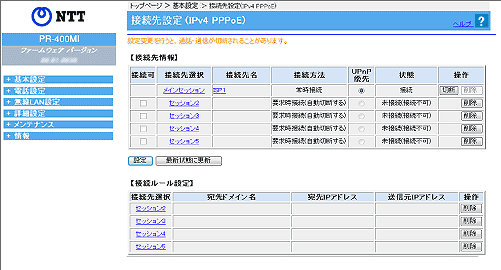

あらかじめ接続先を複数設定しておいて、その中から接続先を選択して接続することができます。
複数の接続先を同時に接続することもできます。 |
| |
＜お知らせ＞
- 複数の接続先を同時に接続するためには、回線が複数同時セッションに対応している必要があります。
- 画面右側の「操作」欄にあるボタンをクリックすることで、手動でPPPoEの接続と切断を行うことができます。
- インターネット（IPv6 IPoE）接続のみをご利用の場合は接続先の設定を行わないでください。
|
| |
＜お願い＞
- IP電話で使用するプロバイダの接続先は、必ずメインセッションに登録してください。
セッション2〜5に登録すると、IP電話は使用できません。
|
| |
| ※「Web設定」画面に表示されているボタンについての説明は こちら |

（画面は、フレッツ 光ネクストの場合の設定内容です。) |
|
・メインセッションの場合
［接続先選択］の［メインセッション］をクリックする
・セッション2〜5の場合
［接続先選択］の［セッション2］〜［セッション5］のいずれかをクリックする |
|
| メインセッションの場合 |
|
|
|
| ［接続先の設定］ |
 接続先選択 接続先選択 |
| |
前画面で選択した接続先（ここでは「メインセッション」）が表示されます。 |
| |
| 接続先名 |
| |
接続先の名称を入力します。 |
| |
＜お知らせ＞
- ここで設定した名称で接続先を判別することができます。
- 全角文字、半角英数字、半角カタカナ、および記号を使用できます。
文字数は、半角英数字および半角記号のみの場合、64文字以内となります。
全角文字、半角カタカナを含む場合は、64文字より少なくなります。
大文字と小文字は区別されます。
使用できる記号は、下記のとおりです。
_ ! " # $ % & ' ( ) * + , - . / : ; < = >
? @ ［ \ ］ ^ ` { | } ~ 半角スペース
- 半角スペース、全角スペースのみの名称は設定できません。
|
| |
| 接続先ユーザ名 |
| |
プロバイダから指定されたPPP認証用のIDを半角英数字または記号で入力します。
半角の英数字と記号で最大80文字まで入力可能です。 |
| |
| 接続パスワード |
| |
プロバイダから指定されたPPP認証用のパスワードを半角英数字または記号で入力します。
半角の英数字と記号で最大48文字まで入力可能です。 |
| |
|
|
| ［IPアドレス］ |
| IPアドレスの自動取得（初期値：IPアドレスの自動取得） |
| |
IPアドレスの取得方法を指定します。 |
| |
|
- 「IPアドレスの自動取得」
プロバイダから自動的に割り当てられるIPアドレスを使用する場合に選択します。
プロバイダから特に指定がない限りは、「IPアドレスの自動取得」を選択します。 |
- 「IPアドレスの手動設定」
| 固定IPアドレスサービスを使用して、WAN側のIPアドレスが指定されている場合に選択します。その場合、プロバイダから指定されたIPアドレスを入力します。
|
- 「Unnumbered」
プロバイダから割り当てられた複数のグローバルIPアドレスを、本商品および本商品に接続されたパソコンにそれぞれ設定する場合に使います。その場合、プロバイダから指定されたIPアドレスとネットマスクを入力します。
固定IPアドレスを8個割り当てるサービスの場合は、「29」を入力します。
固定IPアドレスを16個割り当てるサービスの場合は、「28」を入力します。 |
|
＜お知らせ＞
- 複数固定IPサービスの詳細については、契約プロバイダにお問い合わせください。
|
|
| ［DNSサーバアドレス］ |
| サーバから割り当てられたアドレス（初期値：使用する） |
| |
プロバイダから自動的に割り当てられるDNSサーバアドレスを使うように指定します。
通常は「使用する」にチェックをします。
「使用する」のチェックを外した場合は、表示される［プライマリDNS］［セカンダリDNS］に、プロバイダから指定されたDNSサーバのプライマリDNSとセカンダリDNSを入力します。
|
|
|
| ［認証方式］ |
| 認証方式（初期値：自動認証） |
| |
認証時の認証方式を設定します。 |
|
- 「暗号化されていないパスワード(PAP)」
PAP(Password Authentication
Protocol : パスワード認証プロトコル)を 使用する場合に選択します。 PAPは、プレーンテキストパスワードを使う最も単純なプロトコルです。
PAPは通常、接続先に対してより安全な形式での確認のネゴシエーションを行うことができない場合に使用します。 |
- 「チャレンジハンドシェーク認証プロトコル(CHAP)」
CHAP(Challenge
Handshake Authentication Protocol : チャレンジハンドシェーク認証プロトコル)を使用する場合に選択します。
CHAPでは、安全で暗号化された認証のネゴシエーションが行われます。
業界標準の Message Digest 5(MD5)では、パスワードなどのデータを結果が一意になり、元の形には戻すことができない方法で変換します。
CHAPでは、応答側で一方向(不可逆)のMD5ハッシュを行うチャレンジ応答が使われます。
この方法により、ネットワークを介してパスワードを実際にサーバに送信することなく、自分がパスワードを知っていることをサーバに証明できます。
CHAPをサポートすることによって、ほとんどすべてのサーバに安全に接続できます。 |
- 「自動認証」
サーバから要求された認証方式に合わせて接続します。
|